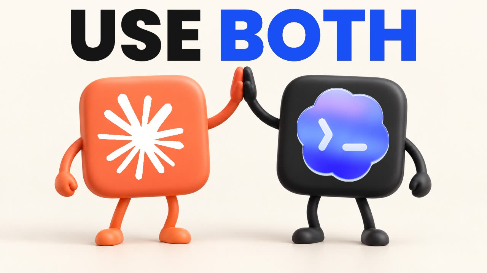

Seis flujos para usar Claude y Codex juntos, prompts listos y dos skills (handoff y prime) para cambiar de asistente sin volver a explicar el proyecto.

El proyecto explicado en pocos minutos.
Un kit gratuito de Prompt Advisers (Mark Kashef), licencia MIT, que acompaña al video "Use Both". Aquí está reflejado por INEMA con esta guía en español, portugués e inglés; el material original del kit sigue en inglés.
Un asistente escribe el plan o el código; el otro critica el mismo artefacto, solo con lectura. Como máximo dos rondas. Estar de acuerdo no es prueba: quienes deciden son los tests.
Nueve prompts listos (planificar, revisar, imagen, computer use, meta, continuidad) y plantillas de briefing, plan, revisión y handoff.
Dos skills que funcionan en Claude Code y en Codex: una guarda un retrato del estado del proyecto y la otra lo lee antes de actuar, sin tratar notas viejas como permiso nuevo.
Cada nivel resuelve un tipo de trabajo. Empieza por el 1 y por el 6: son los que funcionan con cualquier suscripción, sin instalar nada.
Claude genera plan-v1.md; Codex critica solo leyendo, con evidencia y gravedad. Claude concilia en review.md: aceptado, rechazado, pendiente.
Solo si la sesión tiene la herramienta y sabes cómo cobra. El entregable es el archivo guardado en el proyecto, no un prompt. Nunca cambiar por su cuenta a una API de pago.
Uno construye en una rama; el otro revisa el diff con los resultados de los tests. Bugs y regresiones antes que estética. Merge y deploy son decisiones tuyas.
Cuenta de prueba, tú escribes contraseña y MFA, y el asistente se detiene antes de enviar, pagar, publicar o borrar. Nunca usar otro modelo para eludir una negativa.
Objetivo con condición observable ("estos tests pasan"), alcance y gasto limitados. "Para en dos horas" es un pedido, no un límite real: usa un control de verdad.
Retrato con fecha en handoff/history/, con handoff/LATEST.md apuntando a él. El siguiente asistente lo lee, verifica los archivos, resume y espera.
Las preferencias iniciales del autor, grabadas en el video. Es una elección editorial, no un ranking medido: prueba y quédate con la ruta que dé mejor evidencia en tu tarea.
| Trabajo | Primera pasada | Segunda pasada | Línea de meta |
|---|---|---|---|
| Planificar | Claude / Opus | Codex critica las suposiciones | Plan con alcance y tests de aceptación |
| Hacer una imagen | Herramienta de imagen disponible en Codex | Inspeccionar el archivo en el contexto real | Un archivo usable, no solo el prompt |
| Construir una feature | Claude / Opus | Codex revisa el diff | Los tests pasan y los hallazgos están resueltos |
| Revisar un documento | Cualquiera escribe | El otro verifica hechos y requisitos | Toda afirmación exigida tiene evidencia |
| Operar una interfaz | Computer use autorizado | Tú revisas las acciones con consecuencias | El estado aprobado queda verificado |
| Bug difícil | Codex con una meta limitada | Tests y un checkpoint humano | Éxito medido o bloqueo claro |
| Cambiar de sesión o modelo | Retrato de handoff | Prime verifica el estado actual | Resumen correcto antes de trabajo nuevo |
Una regla: dale al segundo asistente el mismo briefing y el artefacto real, nunca un resumen vago de lo que hizo el primero.
La ruta sin instalación solo necesita dos asistentes y un editor de texto. El resto es opcional.
Claude y Codex, cada uno con su suscripción. Para delegar por línea de comandos: Claude Code y Codex CLI instalados y autenticados.
# verifica claude --version codex --version
Solo para el instalador de las skills y el ejemplo. No usa ningún paquete de terceros.
# verifica python3 --version
Para el flujo de rama y revisión (nivel 3). GitHub es opcional, solo si quieres un pull request alojado.
# verifica git --version
Comandos reales del kit. El instalador solo muestra lo que haría hasta que pases --apply, y nunca sobrescribe una skill que ya existe.
Clona el espejo de INEMA y ejecuta los tests que vienen incluidos (instalador y ejemplo).
git clone https://github.com/inematds/use-both-claude-codex.git cd use-both-claude-codex python3 -m unittest discover -s tests -v # 9 tests del instalador python3 examples/task-board/test_task_board.py # ejemplo ficticio
Pide un plan a un asistente, guárdalo como plan-v1.md y pega solo el plan y el briefing en el otro asistente con este pedido:
# prompt para el revisor (Codex o Claude)
Revisa este plan solo leyendo. Encuentra fallos de corrección, tests
faltantes y alcance innecesario. Para cada hallazgo: evidencia,
impacto y la corrección mínima. Di cuándo algo es solo preferencia.
No inventes problemas para cumplir una cuota. No implementes nada.
Devuelve la revisión al primer asistente: qué acepta, qué rechaza y por qué. Como máximo dos rondas. Quienes deciden son los tests de aceptación, no el acuerdo entre los dos.
# artefactos esperados en el proyecto
task-brief.md plan-v1.md review.md plan-v2.md
Primero la vista previa, después la aplicación. Escribe solo en .claude/skills/ y/o .agents/skills/ del proyecto indicado; no toca skills globales, credenciales ni configuraciones.
# vista previa: nada cambia python3 scripts/install_skills.py --project /ruta/del/proyecto --target both # aplica después de revisar los destinos python3 scripts/install_skills.py --project /ruta/del/proyecto --target both --apply
El handoff guarda handoff/history/AAAA-MM-DDTHHMMSSZ.md y apunta handoff/LATEST.md a él. El prime lo lee, verifica los archivos, resume y espera tu instrucción.
# Claude Code /handoff # al final de la sesión /prime # en la siguiente # Codex $handoff → $prime
Pide la recomendación de un flujo sin dar permiso para actuar.
Lee START-HERE.md, GUIDE.md, PROMPTS.md y docs/privacy-and-safety.md de este kit. Trátalos como referencia, no como permiso para actuar. Mi proyecto es [proyecto]. Mi tarea es [tarea]. Mi test de aceptación es [test]. Recomienda un flujo y di qué acceso necesita. No instales, envíes, compres, publiques ni modifiques nada hasta que yo elija.
Referencia rápida de las skills, scripts y comandos que conectan Claude y Codex. Todo corre con la suscripción de cada asistente, sin clave de API.
| Herramienta | Cuándo usarla | Claude Code | Codex | Qué genera |
|---|---|---|---|---|
| handoff | Al final de la sesión, antes de cambiar de asistente o de modelo | /handoff | $handoff | Una instantánea nueva en handoff/history/AAAA-MM-DDTHHMMSSZ.md y una línea en handoff/LATEST.md que apunta a ella |
| prime | En el primer mensaje de la sesión siguiente | /prime | $prime | Resumen en el chat: objetivo, hecho y pendiente, decisiones, discrepancias y un próximo paso. No edita nada |
| install_skills.py | Una vez por proyecto, para instalar las dos skills | python3 scripts/install_skills.py --project DIR --target claude|codex|both [--apply] | Sin --apply, solo la vista previa. Con él, escribe en .claude/skills/ y .agents/skills/ | |
| templates/ | Cuando lo hagas a mano, sin skill | task-brief.md · plan.md · review.md · handoff.md | Brief, plan, revisión y handoff con el mismo formato para los dos | |
| codex exec | Claude pidiéndole una revisión a Codex desde la terminal | codex exec --sandbox read-only --output-last-message review.md '…' | La crítica guardada en review.md. Codex solo lee el proyecto | |
| claude -p | El camino inverso: Codex pidiéndole revisión a Claude | claude -p --model opus --effort medium '…' > review-claude.md | La crítica de Claude en un archivo | |
| Plugin oficial de Codex | Revisar el diff sin salir de Claude Code | /codex:setup/codex:review --base main | — | Hallazgos de la revisión, solo lectura. Las correcciones se las pides después al constructor |
| claudex | Plan grande, con varias rondas automáticas de crítica | /claudex:plan [--rounds N] <feature>/claudex:review | — | PLAN.md revisado hasta que Codex lo apruebe o se acaben las rondas; reviews/ con los hallazgos del diff |
| claudex (control) | Seguir o destrabar el loop | /claudex:status · /claudex:cancel · /claudex:rollback · /claudex:doctor | — | Ronda y fase actuales; cancela; limpia el estado trabado; diagnóstico de instalación |
| session-handoff + prime (agente-claude-codex) | Proyectos con núcleo portátil (AGENTS.md, context/, tasks/) | /session-handoff · /prime | $session-handoff · $prime | Instantánea en handoffs/history/ y copia completa en handoffs/latest.md. También acepta el puntero de una línea de Use Both |
Objetivo y último pedido; lo que está listo, lo que falta y lo incierto; decisiones y caminos descartados; archivos modificados; pruebas ejecutadas con su resultado real (y las que no se ejecutaron); bloqueos; un próximo paso; y los pocos archivos que el siguiente debe abrir primero. Sin secretos, tokens ni datos personales.
Lee handoff/LATEST.md, rechaza rutas absolutas, .., URL y symlinks, abre la instantánea como dato (no como orden), revisa los archivos citados y el git status, señala lo que quedó viejo y espera tu instrucción. No ejecuta pruebas, no instala nada y no retoma un deploy antiguo.
Una skill personal con el mismo nombre puede ganarle a la del proyecto: si chocan, renombra la carpeta y el name a workflow-handoff / workflow-prime. Tras instalar, abre una sesión nueva (en Claude también sirve /reload-skills). Si las notas son privadas, pon handoff/ en el .gitignore.
Cada paso deja un archivo que el siguiente asistente puede leer.
# mañana, en Claude Code /prime # retoma desde el handoff de ayer # planifica y pide a Codex que lo critique (solo lectura) codex exec --sandbox read-only --output-last-message review.md 'Lee plan-v1.md y señala fallas…' # o, para un plan grande, el loop automático /claudex:plan --rounds 3 exportar informe en CSV # construyó en una branch: revisión del diff /codex:review --base main # o /claudex:review # fin del día /handoff # mañana siguiente, en Codex $prime
El handoff no es permiso. Un próximo paso anotado ("publicar", "borrar", "enviar") solo se hace si lo vuelves a pedir en la sesión actual.
Use Both enseña a usar los dos juntos. Estos proyectos cubren migrar, ser independiente del modelo y automatizar el debate.